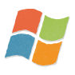

Mac
Mac Installer (12.0MB)
Il Client Bitcoin Originale è un software gratuito e open-source. La versione corrente è la{{ site.DOWNLOAD_VERSION }}, e puoi scaricarla qui:
Windows
Windows Setup (9.2MB)
Mac
Mac Installer (12.0MB)

Linux
Code & Binaries (11.1MB)
Dopo il download, install il client sul tuo computer Windows, Mac o Linux. Creerà automaticamente un portafoglio per te e scaricherà la cronologia delle transaioni. (Le versioni future sarannodotate di una modalità "lightweight" dove questo non è necessario.)
Un altro modo di avere un portafoglio è quello di averne uno online a Coinbase or MyWallet. Con questa opzione non dovrai installare nulla, ma dovrai fare attenzione a non perdere la tua password e renderti conto che ti stai fidando di quel sito per quanto riguarda la sicurezza del tuo portafoglio.
Una volta che il tuo portafoglio è stato configurato, avrai il tuo primo indirizzo Bitcoin, il che significa che sei pronto per ricevere Bitcoins!

Non è il modo più onveniente, ma i programmi bonus offrono una piccola quantità di Bitcoins quando fate acquisti, quando rispondete ai sondaggi, ecc...

Dai un'occhiata per vedere se ci sono utilizzatori di Bitcoins nella tua area a LocalBitcoins.com e TradeBitcoin.com!
Puoi trovare Bitcoins fisici attraverso Casascius e BitBills. Questi posti accettano solo Bitcoin, ma puoi averli con una carta di credito attraverso MemoryDealers. Dovrai pagare una differenza per la produzione e le spese di spedizione, ma è una maniera onesta e facile di possedere quantità moderate di monete. In più le monete fisiche sono sempre un regalo bello che dura nel tempo!
Per più grandi acquisti ci sono diverse piazze di scambio, come Mt. Gox, Bitstamp, CampBX, Intersango and Virtex (CA).
troval'account excange che fa al caso tuo o compra Bitcoin direttamente in uno dei 700 000 + luoghi attorno al mondo attraverso via BitInstant.
Se preferisci saltare lo scambio e contrattare direttamente con le altre persone puoi optare per Bitcoin OTC.
Puoi trovare molti servizi relazionati con Bitcoin nelle Trade page nella Bitcoin Wiki.
Scopri la più grande casa d'aste Bitcoin online al BitMit!
Un numero crescente di negozi fisici, ristoranti e altri luoghi accettano Bitcoin. Guarda Bitcoin Travel e Bitcoin Navigator per vedere se ce ne sono nella tua area.
Trasforma i tuoi Bitcoins in carte regalo ad Amazon, Barnes & Noble, iTunes e tante altre a SpendBitcoins.com. O acquista istantaneamente codici regalo per servizi come XBoxLive, PSN o iTunes online a Bitcoincodes.com.
Compra music, ebooks, wallpapers e qualsiasi altro contenuto scaricabile a CoinDL!
potresti anche dare un'occhiata a Bitcoin Marketplace forum on Bitcoin.org.
Scambi diretti si possono fare anche via chat IRC in Bitcoin OTC (#bitcoin-otc su Freenode).